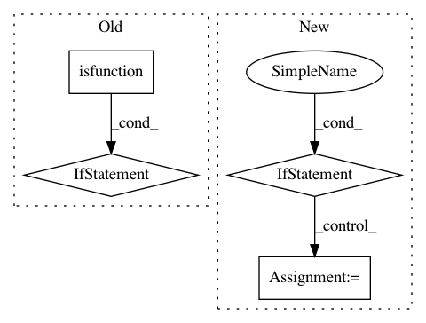

6373c706615bc94c0a1e7fc564b3d18c3d342d91,python/ray/serve/api.py,,create_backend,#Any#Any#,208
Before Change
" of instance BackendConfig")
// Validate that func_or_class is a function or class.
if inspect.isfunction(func_or_class):
if len(actor_init_args) != 0:
raise ValueError(
"actor_init_args not supported for function backend.")
elif not inspect.isclass(func_or_class):
raise ValueError(
"Backend must be a function or class, it is {}.".format(
type(func_or_class)))
// Make sure the batch size is correct.
should_accept_batch = backend_config.max_batch_size is not None
if should_accept_batch and not _backend_accept_batch(func_or_class):
raise batch_annotation_not_found
if _backend_accept_batch(func_or_class):
After Change
if config is None:
config = {}
if not isinstance(config, dict):
raise TypeError("config must be a dictionary.")
replica_config = ReplicaConfig(
func_or_class, *actor_init_args, ray_actor_options=ray_actor_options)
backend_config = BackendConfig(config, replica_config.accepts_batches)
retry_actor_failures(master_actor.create_backend, backend_tag,
backend_config, replica_config)
In pattern: SUPERPATTERN
Frequency: 3
Non-data size: 4
Instances
Project Name: ray-project/ray
Commit Name: 6373c706615bc94c0a1e7fc564b3d18c3d342d91
Time: 2020-04-30
Author: ed.nmi.oakes@gmail.com
File Name: python/ray/serve/api.py
Class Name:
Method Name: create_backend
Project Name: scikit-learn/scikit-learn
Commit Name: dad615ae7a53e0b19cd6a3db11c3362fd58f99ad
Time: 2020-06-25
Author: thomasjpfan@gmail.com
File Name: doc/sphinxext/custom_autosummary_new_suffix.py
Class Name:
Method Name: setup
Project Name: osmr/imgclsmob
Commit Name: 2d8dae6582495d4da285d0646f5338af9dfee7fc
Time: 2019-01-03
Author: osemery@gmail.com
File Name: gluon/gluoncv2/models/common.py
Class Name: ConvBlock
Method Name: __init__